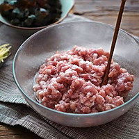
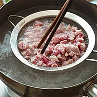
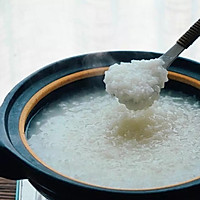
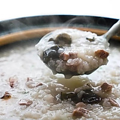
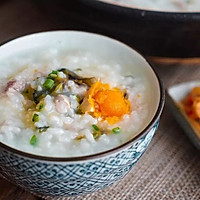

手順1

ひき肉にしたテンダーロインに適量の塩、黒胡椒、クッキングワインを加え、少し粘り気が出るまで少量の水でんぷんを加え、冷蔵庫に15分間入れます。
手順2

マリネした肉を沸騰したお湯の鍋に入れ、肉が白くなるまで調理し、取り出して脇に置きます。
手順3

ご飯がきれいになったら、30分浸し、ご飯と水は1:10で、最初に鍋で水を沸騰させ、ご飯を加え、スプーン一杯の油(より香りがよい)を加えます。
強火で茹でた後、中火で米果肉色になるまで煮沸し、弱火で粘り気が出るまで煮ます。
手順4

マリネした肉、みじん切りにした生姜、保存した卵を注ぎ、塩でかき混ぜて5〜6分間調理します。
手順5

ごま油をスプーン一杯加え、刻んだねぎをふりかけて調理します。
トップページに戻る